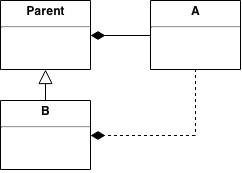

Model
wCMF applications are based on a model. The model defines the key aspects of the application on a higher abstraction level than code does. You can think of it as a condensed description of the application.
A template based code generator transforms the model into source code that will run inside the wCMF framework. Where necessary, the code can then be enhanced manually inside pre-defined regions. Further generation runs will protect these manual additions.
We believe that this approach helps to develop a clear concept of the application and improves code quality and maintainability dramatically.
Modeling
Technically the model is an UML model that uses the Chronos profile from the Olympos project. It is stored in an Eclipse MDT/UML2 compatible XML file (e.g. model.uml). This file can be directly edited using Eclipse Papyrus or any other compatible UML modeling tool. Alternatively you can use the Chronos Web Modeler that allows browser based collaborative modeling. wCMF uses a minimized version of the code generator from the Olympos project with wCMF specific templates.
The following diagram shows the workflow of the generator.

Chronos profile
Profiles are used to extend UML for different domains. They consist of stereotypes and tags that are applied to model elements to express domain specific features. The following sections describe the stereotypes and tags of the Chronos profile that are used to define various aspects of a wCMF application. The complete Chronos profile is available on GitHub.
You will notice that only a small part of UML is used to define the application and not all aspects of the application are defined in the model. Especially the actual behavior of controllers and domain classes is omitted, since we believe that this is more efficiently expressed in code. For simplicity and compatibility reasons all aspects can be modeled in class diagrams using classes, attributes and associations.
- Note
- UML elements and concepts that are not mentioned in the following sections are most likely not supported by the generator and will be ignored.
Domain classes
The following stereotypes are used to model persistent domain classes and their relations.
| Name | UML meta class | Description | Example |
|---|---|---|---|
| ChiNode | Class | Persistent domain class, must inherit from Node | Article |
| ChiValue | Attribute | Persistent attribute in a ChiNode | headline of Article |
| ChiValueRef | Attribute | ReadOnly-reference to an attribute of another ChiNode | author_name in Article references name in Author |
| ChiManyToMany | Class | Connection class in a many to many relation between ChiNode classes, must inherit from Node | One Author writes nultiple Articles and one Article has multiple Authors |
| ChiAssociation | Association | Optional, e.g. used to define a foreign key name in a relation between ChiNode instances | author_id in Article as foreign key to Author table |
ChiNode / ChiManyToMany
The following tags are defined on the ChiNode / ChiManyToMany stereotypes.
| Tag | Description | Example | Default value |
|---|---|---|---|
| initparams | Name of the configuration section, which defines initialization parameters for the PersistenceMapper instance | database | database |
| display_value | Attributes to display in a list view: A single attribute name or comma separated list of attribute names | name,date | |
| orderby | Definition of default sorting: none (no order), sortkey (generates a sortkey column, that is used for explicit sorting) or the name of any attribute optionally followed by ASC or DESC | name ASC | none |
| is_searchable | Boolean, indicating whether this type should be included in the default search | true | true |
| is_soap | Boolean, indicating whether this type should be exposed to the SOAP interface | true | true |
| table_name | The name of the database table in which instances will be stored | Author | Class name |
| pk_name | The name of the primary key column: A single value or comma separated list of values (the generator will add this automatically, if there is no appropriate attribute) | fk_user_id,fk_role_id | id |
| child_order | The order of the associated relations: A comma separated list of role names | Author,Publisher,Image,Textblock,Attachment in Article type | |
| parent_order | not used |
- Note
- Some of these tags are accessible in the application through the
PersistentObject::getPropertymethod.
ChiValue
The following tags are defined on the ChiValue stereotype.
| Tag | Description | Example | Default value |
|---|---|---|---|
| app_data_type | Application specific attribute tags: A single value or comma separated list of values (see Values, Properties and Tags) | TAG_A,TAG_B | DATATYPE_ATTRIBUTE |
| db_data_type | The attribute's database type | TEXT | VARCHAR(255) |
| is_editable | Boolean, indicating whether this attribute is editable | true | true |
| input_type | Name of the attribute's input control as listed in the InputTypes configuration section and additional configuration encoded as JSON string | filebrowser or ckeditor:{"toolbarSet":"full"} | text |
| display_type | Name of the attribute's display type as listed in the DisplayTypes configuration section | image | text |
| restrictions_match | Name of the attribute's validation type or comma separated list of validation types as listed in the Validator configuration section (see Validation) and additional configuration encoded as JSON string | date,required or regexp:{"pattern":"^[0-9]*$"} or image:{"height":[300,0]} | |
| restrictions_not_match | not used | ||
| restrictions_description | Validation description used in case of a validation error | The value must be an integer or empty | |
| column_name | The name of the database column in which the attribute will be stored | name | Attribute name |
- Note
- Some of these tags are accessible in the application through the
PersistentObject::getValuePropertymethod.
ChiValueRef
The following tags are defined on the ChiValueRef stereotype.
| Tag | Description | Example | Default value |
|---|---|---|---|
| reference_type | Type, that owns the referenced attribute | Author | |
| reference_value | Name of the references attribute | name |
Transient properties
All class properties without a ChiValue or ChiValueRef stereotype are considered to be transient/computed properties.
ChiAssociation
The following tags are defined on the ChiAssociation stereotype.
| Tag | Description | Example | Default value |
|---|---|---|---|
| fk_name | Name of the foreign key attribute (the generator will add this automatically, if there is no appropriate attribute) | author_id | fk_type_ id |
Example class diagram
A simple data model is shown in the diagram below. Each of the domain classes Author, Article and Image is modeled with ChiNode stereotype, their attributes with ChiValue stereotype. The only exception is the author_name attribute, which is a reference to the name attribute of Author and therefore uses the stereotype ChiValueRef. As the relations between the classes show, one Author can own several Articles and each Article in turn can contain several Images.
All PersistenceMapper instances are initialized using the parameters defined in the database configuration section.
In list views Author instances are sorted by name while Article and Image instances get an attribute sortkey which is used to define an explicit order.
Associations
Relations between domain classes - e.g. parent-child relations - are modeled as associations. Three different types of associations are supported: compositions, aggregations and one-directional associations as shown in the following diagram.
It is important to understand how wCMF recognizes parents and children in an association. In case of compositions and aggregations the parent is always the class, that is connected with the diamond end of the association. Other associations are treated as parent-child relation, if they are only navigable in one direction, which is then defined as the child to parent direction.
The association types differ in the treatment of children in case of deletion of the parent. In aggregations and normal associations children are not deleted, while composite children are deleted on parent deletion. On the other hand the default application allows creation of child instances in a composition, while the other two types only allow adding existing instances.
The following table summarizes the behavior of the different association types regarding the operations allowed on child instances:
| Association type | Delete children | Create children | Associate children |
|---|---|---|---|
| Composition | Yes | Yes | No |
| Aggregation | No | Yes | Yes |
| Association | No | No | Yes |
Multiplicity
The multiplicity at the association ends limits the amount of instances that are allowed at that relation end. In a typical parent-child relation the parent end has a value of 1 and the child end has a value of 0..* meaning that a child instance is connected to exactly one parent instance, while any number of child instances can be connected to the parent instance (including zero). This kind of relation is called one-to-many relation and is easy to realize in a database by using a foreign key column.
Many-to-many relations on the other hand allow an arbitrary number of instances at both ends and are typically realized in an database using a junction table. The Chronos profile allows for this by providing the ChiManyToMany stereotype. The following diagram shows how to model a many-to-many relation:
Using compositions ensures that many-to-many instances are deleted correctly, when the parent instances are deleted.
Navigability
Another aspect of associations is the use of arrow ends that define the navigability. If an arrow end is omitted on one end, instances at that end are not accessible from the other end. Regarding the database schema all three association types will result in the creation of a foreign key column in the child table that points to the parent table.
Role names
Each end of an association can have a role name assigned. It describes how the element at that end participates in the relation. Generally the role name defaults to the element's name, but there are two cases where it is necessary to assign a dedicated name:
- Multiple associations
- Self associations
Sometimes multiple associations have to be defined between two domain classes. For example if there are Person and Task domain classes and tasks should be associated with persons. If each task should have an owner and a creator, there will be two aggregations between the two domain classes. To allow wCMF to know which role a person has in relation to a given task, role names have to be assigned to the association ends.
The following diagram illustrates the given example:

To build a hierarchy where one item contains items of the same type, an association from the domain class to itself is required. An example would be a file system with nested directories. In this case, role names are required at each end of this self association.
The following diagram illustrates the given example:
Inheritance
If different domain classes should have the same attributes, a common base class can make these available to inheriting classes. An example would be an EntityBase type, which defines meta information like creation date and last modification date for all domain classes. The diagram below illustrates the concept.
Inheritance will cause the generator to create new relations in the following cases:
| Parent relations | Child relations |
|---|---|

Subclass B becomes parent of A |
Subclass B becomes child of A |
Parent class of B becomes parent of A | 
Child class of B becomes child of A |
Application flow
Since a wCMF application is based on the Model-View-Controller pattern, application flow is defined in terms of controllers and views. Controller execution is triggered by actions which are initiated by the application user.
The following stereotypes are used to model user interaction.
| Name | UML meta class | Description | Example |
|---|---|---|---|
| ChiController | Class | Controller class, must inherit from the Controller | LoginController |
| ChiView | Class | View assigned to a ChiController | login |
| ChiActionKey | Association | Associates two ChiController instances (to define a control flow) or a ChiView with a ChiController (to define a view attachment), must be one directional |
- Note
- ChiActionKey realizes the concept of action keys (see Action Key). Multiple action keys can be defined between controllers or controllers and views each one used in a different context and/or for a different action.
ChiController
No tags are defined on the ChiController stereotype.
ChiView
No tags are defined on the ChiView stereotype.
ChiActionKey
The following tags are defined on the ChiActionKey stereotype.
| Tag | Description | Example | Default value |
|---|---|---|---|
| action | The action, which is triggered by this association. If empty, any action is valid | save | |
| context | The context, in which this association is valid. If empty, any context is valid | author | |
| config | The configuration, in which this association is defined | config.ini | config.ini |
Example application flow
An example for a simple interaction model is given in the diagram below. The controllers are modeled with the stereotype ChiController, the associations with ChiActionKey stereotype. Each association's tagged values are displayed in an attached note. Since the association between AuthorController and author view does not define the tagged values action and context, AuthorController displays this view for every action and context. The same applies to ArticleController and the article view. SaveController does not display a view, it only stores the data passed to it and returns to the next controller.
For associations, which link controllers, at least the tagged value action is set. Since obviously all save actions result in the execution of SaveController, no context is necessary. The context is helpful, when we want to solve the ambiguousness of the action ok upon termination of SaveController. We define, that the context is author when editing the author and article when editing articles. By this the application always knows to which controller it should return to after executing SaveController.
- Note
- If the controller value of the action key should be empty, meaning that the action can be triggered from any controller, the source of the ChiActionKey association must be the
Controllerbase class.
Controller methods
By default the framework calls the method doExecute on the current controller instance for any context and action value. For this reason an empty implementation of this method will be added by the generator.
To distinguish different actions or contexts it is also possible to model several operations inside the controller class. To connect an action key to a controller method, the action key's end that points to the controller must be named like the method. The following diagram illustrates the concept:
Request parameters
Parameters can be added to controller methods. The generator will create code that extracts and validates the input parameters from the requests or sets default values if they are absent. Output parameters will be added to the response.
Routes
If an action should be available in the public API of the application, it must be mapped to a request uri in the Routes configuration section (see External routing).
This can be easily achieved by setting a request uri pattern on the action key's source end. The following diagram illustrates the concept:
Configuration
The following stereotypes are used to model the application configuration.
| Name | UML meta class | Description | Example |
|---|---|---|---|
| ChiSystem | Class | A configuration section, class members and their default values become key-value pairs inside the section | Database |
ChiSystem
The following tags are defined on the ChiSystem stereotype.
| Tag | Description | Example | Default value |
|---|---|---|---|
| platform | The platform to which the configuration settings apply | wcmf | |
| config | The configuration, in which the settings are defined | config.ini | config.ini |
Example configuration
The following diagram shows the configuration of a database connection. The connection parameters can be accessed later using the Configuration::getSection method and passing database as section paramter.

Default model
The default application includes a demo UML model located in model/model.uml. It is a good starting point for custom applications. For those who want to start from scratch there are also base models in model/base/cwm/ (for Chronos Web Modeler) and model/base/papyrus/ (for Eclipse Papyrus).
The default model has the following package structure:
- model
- wcmf test
- root
- wcmf Framework packages with useful (base-)classes
- Primitive types
- configuration Base configuration
- config.ini
«ChiSystem» Config- ...
- ...
- config.ini
- application
- controller Existing controllers
«ChiController» AssociateController- ...
- controller Existing controllers
- lib
- presentation
«ChiController» ControllerBase class for all controller classes
- model
«ChiNode» NodeBase class for all domain classes
- security
- principal
- impl
AbstractUserBase class for custom user classAbstractRoleBase class for custom role class
- impl
- principal
- presentation
- app Application specific packages
- configuration Application specific configuration
- backend.ini
- server.ini Deployment specific configuration
- src
- model Domain class package
- wcmf Default framework classes
«ChiNode» DBSequence- ...
«ChiNode» EntityBaseBase class for domain classes with audit info- ...
- wcmf Default framework classes
- controller Controller package
«ChiController» RootControllerMain controller of default application
- views Views package
«ChiView» cmsMain view of default application
- model Domain class package
- configuration Application specific configuration
- wcmf Framework packages with useful (base-)classes
- root
- wcmf test
Application specific model elements will mostly reside in the emphasized packages.
Generator
wCMF uses the code generator from the Olympos project which is originally based on openArchitectureWare. The generator is a JAVA application that executes user defined workflows. Workflows are organized in cartridges one of which is the wCMF cartridge. Cartridges are written in the Xtent/Xpand language.
If you are using Composer, the generator will be installed as a dependency in the directory vendor/olympos/chronos-generator. It is also available at SourceForge.
Configuration
The configuration of the generator is stored as key-value pairs in a file called workflow.properties in the model directory. It contains the following variables:
| Variable | Description | Default value |
|---|---|---|
| profilename | Name of the used UML profile | Chronos |
| profileUmlFile | Path to the profile file | ${basePath}/metamodel/chronos.profile.uml |
| modelUmlFile | Model file to generate code from | model.uml |
| transformedModelUmlFile | Location for the model transformed into the generator's internal format (used for debug purposes) | model-transformed |
| rootPackage | Model package containing libraryPackage and applicationPackage. It's name will be stripped from paths to classes | wcmf test::root |
| libraryPackage | Model package, in which the wCMF framework is defined. From this package no files will be generated | wcmf |
| applicationPackage | Model package, in which the application is modeled | app |
| doCheck | Indicates whether the generator should run checks on the model | true |
| preCheckFile | Check file, that should be used before the transformation into the internal model format | cartridge::Wcmf::checks::pre |
| postCheckFile | Check file, that should be used after the transformation into the internal model format | cartridge::Wcmf::checks::post |
| requiredControllerSuperclass | Controller base class, from which all controllers must inherit, used in the checks | model::${rootPackage}::${libraryPackage}::lib::presentation::Controller |
| requiredNodeSuperclass | Domain base class, from which all domain classes must inherit, used in the checks | model::${rootPackage}::${libraryPackage}::lib::model::Node |
| doBackup | Indicates whether the generator should do a backup of the application, before generating any files | false |
| expand | Template definition to start the generation from | cartridge::Wcmf::templates::Root::root |
| outputEncoding | Encoding of the generated files | UTF-8 |
| configFileDefault | Name of the default configuration file, general properties like type mapping are declared here | config.ini |
| projectname | Name of the application | wcmf testapp |
| targetDir | Directory, in which the application is created | targetDir |
| prExcludes | File patterns to be excluded when searching for protected regions | *.svn-base, .git, vendor |
| printGenerateDate | Indicates whether the generation date should be printed in generated file headers | false |
| headerText | Text to be prepended to generated files |
The variables ${basePath} (generator location) and ${targetDir} (generated code location) must be provided as command line arguments when running the generator (see Running).
Running
The generator is started using the command
The parameters are explained in the following table.
| Parameter | Description | Default value |
|---|---|---|
| libPath | Path to the generator libraries | ../vendor/olympos/chronos-generator/lib |
| workflowFile | Workflow definition file | ../vendor/olympos/chronos-generator/cartridge/Wcmf/workflow/wcmf.oaw |
| basePath | Path to the generator installation | ../vendor/olympos/chronos-generator/ |
| propertyFile | Workflow configuration file | ../model/workflow.properties |
| targetDir | Path to the generated files | ../ |
The default values apply, if the generator is run from the build directory of the default application.
Since the code generator is integrated into the ant deployment script of the application, it's also sufficient to run the following command in the build directory:
ant generate
#
Artefacts
The generator creates the following files:
Configuration
- SQL scripts are generated in the install directory. They contain the table definitions for MySQL databases (
install/tables_mysql.sql) and SQLite databases (install/tables_sqlite.sql). For each domain class one table is created, inherited attributes are stored in each table (Concrete Table Inheritance). - Configuration files in the INI file format are generated in the app/config directory. Configuration files are implicitly defined in the model by the
ChiActionKey.configandChiSystem.configtags. For each name mentioned in these tags, one configuration file will be created, containing all definitions related to it. Furthermore, the default configuration file (config.ini per default) contains the domain class mapping definitions.
PHP Code
- Mapper classes are generated in directories corresponding to the model packages (app/src/model, if the default model packages are used). For each
ChiNode/ChiManyToManyclass one subclass ofNodeUnifiedRDBMapperis created (e.g.AuthorRDBMapper). - Domain classes are generated in the same directories as the mapper classes. For each
ChiNode/ChiManyToManyclass two classes are created, one base class that contains all generated code (e.g.AuthorBase) and one empty subclass, that is used to add custom code (e.g.Author). The base class inherits fromNodeor one of it's subclasses. Getter methods are generated for transient/computed properties. - Controller classes are generated in directories corresponding to the model packages (app/src/controller, if the default model packages are used). For each
ChiControllerclass two classes are created, one base class that contains all generated code and one subclass that contains the methods to be implemented. The base class inherits fromControlleror one of it's subclasses. - The SOAP interface is generated in the file app/public/soap-interface.php.
SOAPControlleruses this file to configure theSoapServer.
Template Code
- View templates are generated in directories corresponding to the model packages (app/src/views, if the default model packages are used). For each
ChiViewclass one empty template file will be created.
JavaScript Code
- Domain classes are generated in a subdirectory of public/js (app/public/js/app/src/model, if the default model packages are used). For each
ChiNode/ChiManyToManyone subclass ofEntityis created. - An AMD file referencing all domain classes is created in public/js/model (app/public/js/model/_TypeList.js, if the default model packages are used).
Protected regions
The generator creates functional code, but of course custom code must be added to implement domain specific functionality. For this reason the generator adds sections that are enclosed in PROTECTED REGION tags, between which the user is supposed to place custom code. When re-generating the code later (e.g. because of model changes), this custom code will be preserved.
An example of a class file containing protected regions is shown below.